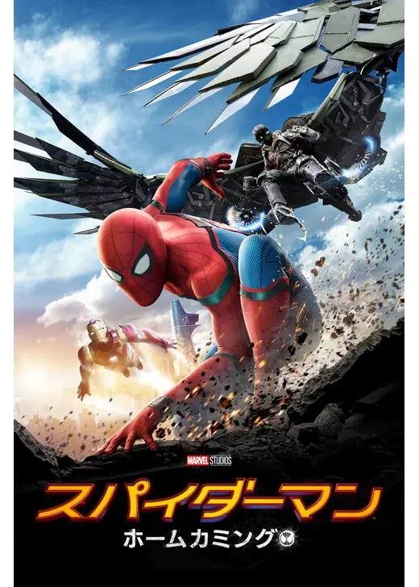
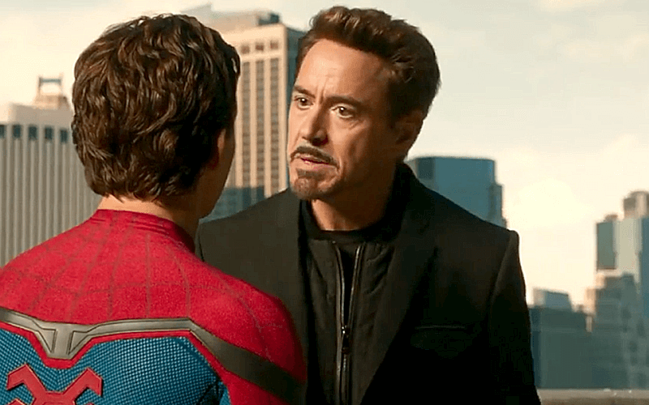
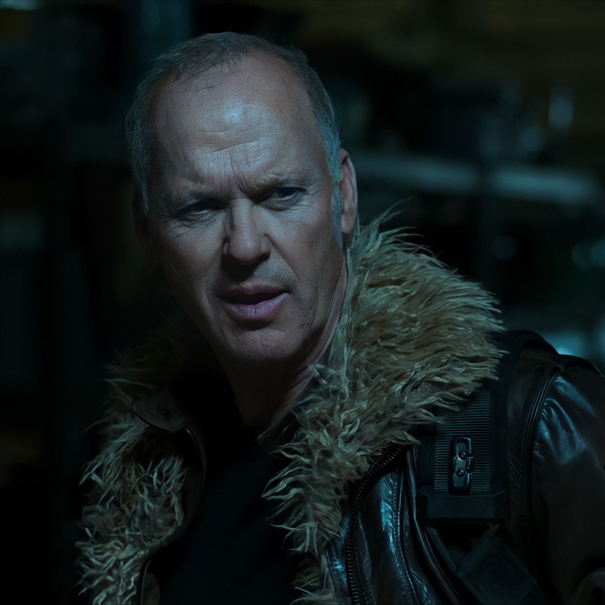
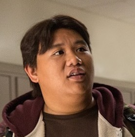

ピーター・パーカー / スパイダーマン
親愛なる隣人 // アベンジャーズに憧れる15歳
アベンジャーズへの加入を夢見て、放課後に地道な街のパトロールに励む高校生。トニー・スタークから贈られたハイテクスーツの「研修期間モード」を親友ネッドと共に強引に解除し、576通りものウェブシューター機能やAI「カレン」のサポートを得て大はしゃぎする。しかし、自分の力を過信してフェリー切断の大事故を招いてしまい、トニーにスーツを没収されてしまうが、手製の手作りスーツで本当のヒーローの覚悟を証明する。
「立て…立つんだスパイダーマン。」

トニー・スターク / アイアンマン
ピーターのメンター // 厳しく見守るアイアン・ボス
ピーターの才能を認めつつも、まだ若すぎる彼が命を落とすことを最も恐れており、あえて連絡を絶って地道な「隣人」の活動に専念させようとする。ピーターの暴走によってフェリーが崩壊した際は自らアーマーで修復に駆けつけ、激しく叱責してスーツを没収。かつて自分を甘やかして失敗した父親（ハワード）のようにはなるまいと、不器用ながら父親代わりとしてピーターを導く。
「スーツ無しじゃダメならスーツを着る資格は無い。」

エイドリアン・トゥームス / バルチャー
瓦礫撤去の元業者 // 家族のために羽ばたく怪鳥ヴィラン
ニューヨーク決戦（アベンジャーズ1作目）の瓦礫撤去業者だったが、トニーらが設立したダメージ統制局（D.A.M.N.）に仕事を理不尽に奪われ失業。政府や大企業への復讐と家族の平穏な生活のため、盗み出していた宇宙人（チタウリ）のハイテク兵器の残骸を改造・密売する裏社会のボスとなる。自ら巨大な金属翼「バルチャー・ウイング」を纏い、スターク社の輸送機強奪を狙う。
「……世界は変わった、俺たちも変わるしかねえんだよ、ピーター。」

ネッド・リーズ
レゴが大好きな大親友 // 自称「椅子に座る男（ハッカー）」
ピーターの高校の同級生で、科学オタクの愛すべき大親友。ある日、ピーターの部屋で彼が天井に張り付いているのを目撃し、スパイダーマンの正体を知ってしまう。激しく興奮しながらも秘密を徹底的に守り、自慢のプログラミングスキルでスターク・スーツのプロトコルをハッキング。体育館のデスクトップPCからピーターへ逃走経路や敵の現在地を指示する「椅子に座る男（Guy in the chair）」として完璧にサポートする。
「俺は『椅子の人』になりたいんだ」